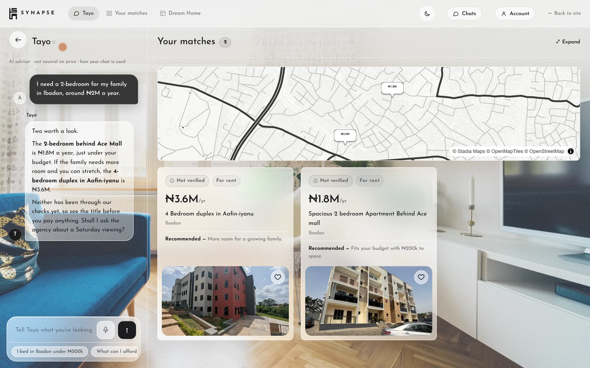
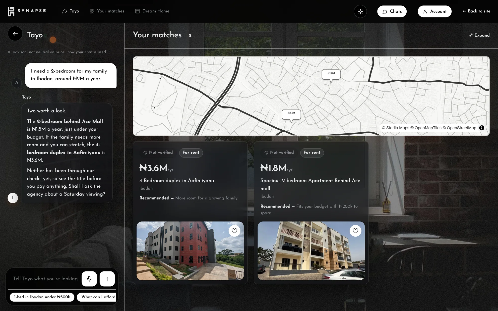
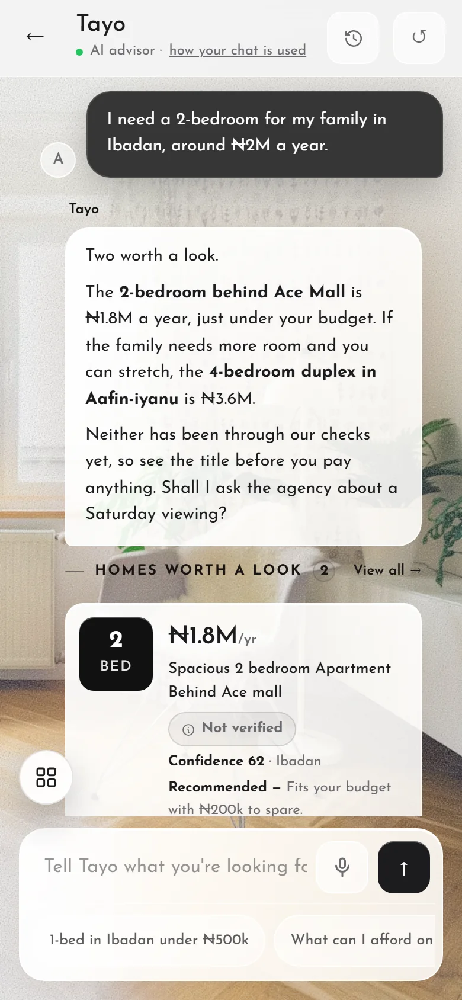
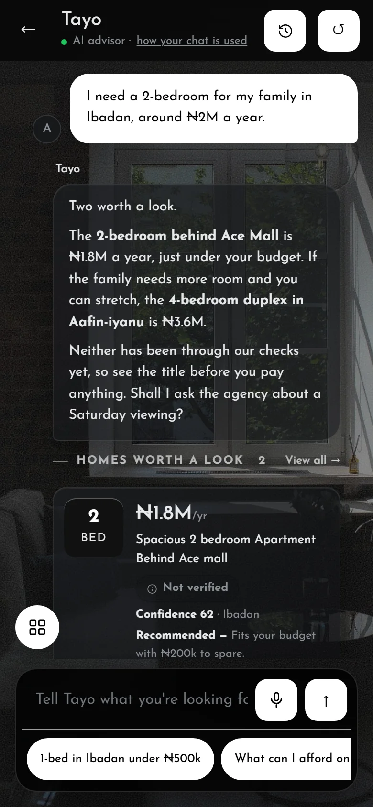
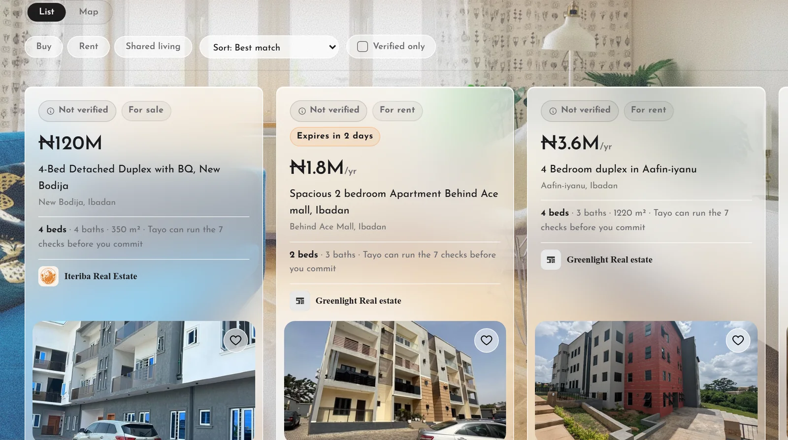
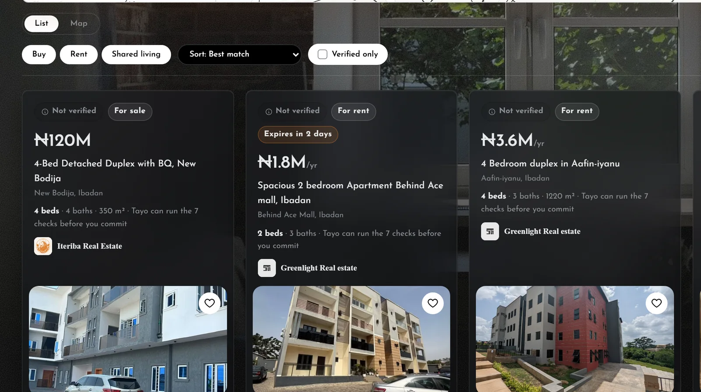
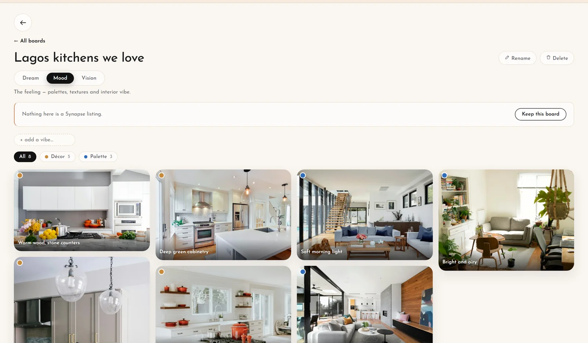
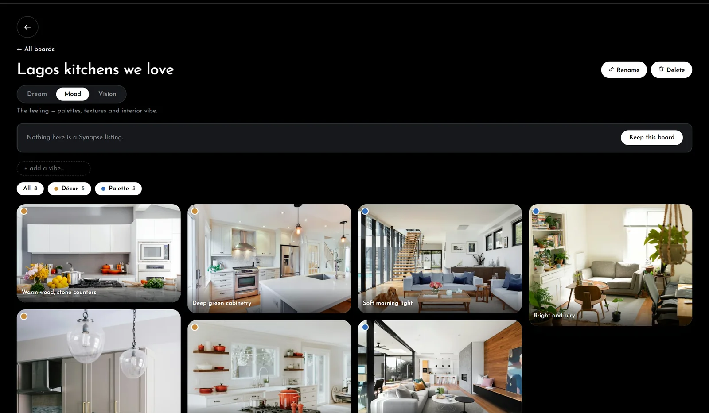
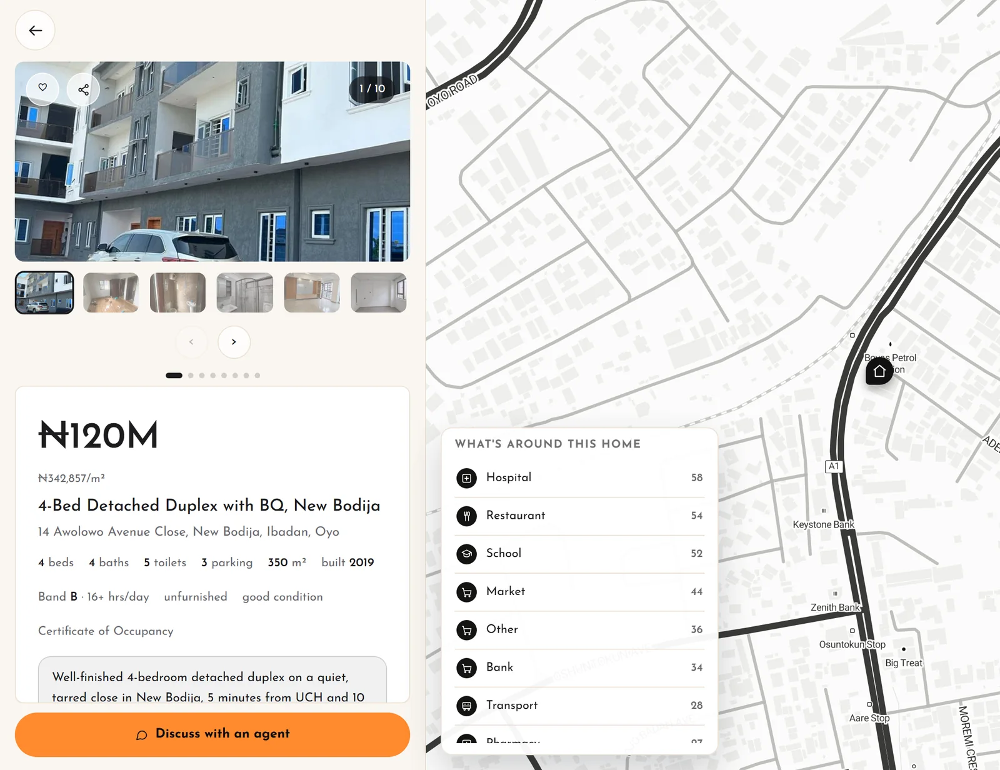
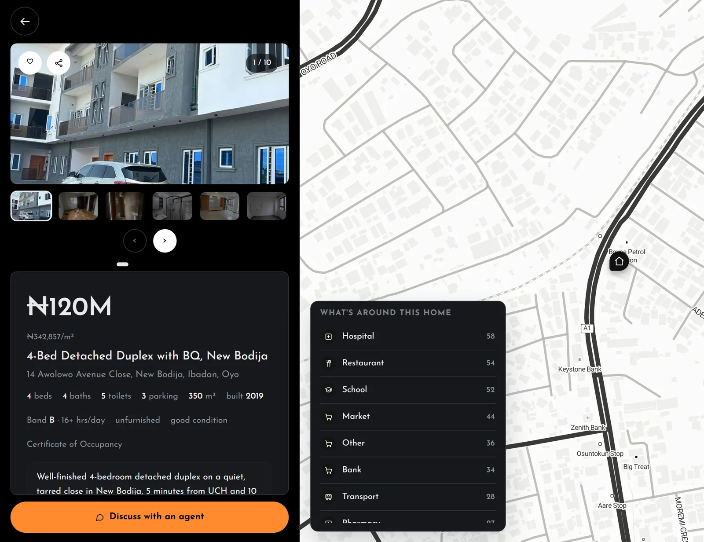

Tayo is awake when you are
Ask at two in the morning and get an answer at two in the morning. No form to fill in, no callback to wait for, no office hours to work around.
Tayo learns how you actually live, finds the homes that fit, and tells you why each one made the list.


Ask at two in the morning and get an answer at two in the morning. No form to fill in, no callback to wait for, no office hours to work around.
Every home is re-confirmed by its agency every fortnight, or it comes off the site. So you never make the call that starts “actually, that one has gone.”
No fee, no commission, no subscription, and no card to enter. Agencies pay for Synapse because it brings them buyers. You are the reason it works, not the one being charged.
Where you work, how you get there, what you will not compromise on. It finds the homes that fit, and says why.
Every home it suggests carries its verification status, so you can see which have been through Synapse’s checks and which have not.


What Tayo finds is kept for you, on a list or a map: each home with its price, where it is, and whether it has been verified yet.


Make a board for every idea: a whole home, a kitchen, a corridor you love. Pin what you like. Tayo reads each board and finds real verified homes that feel like it.


Each home shows what is around it — hospitals, schools, markets, transport — on a map beside its photographs.


Free for buyers and renters. No fee, no commission, and no sign-up to start.